Methodology
Timeline

Natural Disasters: Evolution, Impact and Response
Methodology
Project Overview
The main bulk of our data came from two sources: EM-DAT The International Disaster Database (EM-DAT The International Disaster Database, 2009a) and Google Trends (Google Trends, n.d.).
EM-DAT is maintained by the Centre for Research on the Epidemiology of Disasters (CRED), which is situated at the School of Public Health of the Université catholique de Louvain (EM-DAT The International Disaster Database, 2009b). The database consists of information from various sources: including research institutes, press agencies, UN agencies, insurance companies, and non-governmental organizations (EM-DAT The International Disaster Database, 2009b). Using this database, we sourced 7940 accounts of natural disasters from the 1990s to present. After selecting the period of disasters we wished to use, we were able to download a full CSV file that included economic, geographical, and temporal information of the disasters.
Google Trends, in its own words, allows you to “explore what the world is searching” (ref). Using specific search topics related to our question, such as ‘Floods’, we collected reaction data from the years 2008-2018, and also attempted to match specific events to reactions by searching through smaller periods of time. We were able to easily download the CSV files for this data, allowing us to analyse both datasets together using Python. It is important to note that Google Trends uses ‘Interest over time’ as the measure for media response. A value of 100 represent peak popularity for the term, whereas a value of 50 means that the term is half as popular. As Google Trends presents regional search interest proportionally, we do not need to worry about normalising the data based on the actual number of searches in different regions.
Methodology
We experienced difficulty in collecting reliable media data. While we thought about using Twitter or Facebook as our sources, we soon realised it was impractical to count the number of relevant results while ensuring the quality of our data. We were also suspicious that the number of tweets may not genuinely reflect the intensity of media responses to natural disasters. Additionally, as we were attempting to create a worldwide view of reactions, there were many language barriers to overcome. As a result, we decided to use Google Trends, where multiple search criteria can be applied, multiple languages are automatically included, and .csv files are readily available to download.
In the EM-DAT database, empty fields and “0”s frequently appear. These indicate either missing values or non-reported information. In order for this to affect our project as little as possible, we chose ‘number affected’ as our selection criteria, as the most well-reported factor in disaster size - with the smallest number of empty fields.
Methodology
The EM-DAT database has been created and maintained by a university research group, which suggests that the data found is also likely to be reliable for our own research purpose. Priority is given to data from UN agencies, government, and the International Federation of Red Cross and Red Crescent Societies on grounds of the quality of the data (EM-DAT The International Disaster Database, 2009b). Indeed, it is highlighted that most reporting sources have political limitations (e.g. exaggeration, concealment) or do not cover exhaustive details of the natural disasters. Publicly accessible information on EM-DAT is updated every three months, with entries being constantly reviewed for inconsistencies, incompleteness, or redundancy. All the data has been validated and cross-checked using various sources. Major revisions are made at the end of each calendar year (EM-DAT The International Disaster Database, 2009b). The database therefore has claims to being unbiased, exhaustive and up-to-date.
Google Trends gains its reliability from a comparison to other potential media sources. For example, it is likely to include of a wider range of countries and people than social media sites such as Facebook/Twitter, as it is more widely used by varying demographics. This in itself is likely to increase the reliability of Google Trends as a source, since our data collection becomes less intrinsically biased.The use of ‘search topics’ to collect our datasets also reduces this intrinsic research bias, since our searches encapsulate a wide variety of related search terms. It also includes data from many languages, reducing language bias. However, Google Trends data cannot include some countries, such as China, where the use of Google is banned. This is likely to disturb our results - and needs to be taken into account when assessing the reliability of this dataset.
Methodology
In order to sort our data, we first needed to format the dates in a consistent way. This was done using the “pd.to_datetime” command.
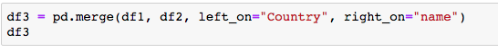The data collected from the EM-DAT database was then restricted to our dates specifically.
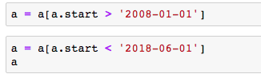
In order to create our map visualisations, it was necessary to apply latitude and longitude values to specific countries. We did this using another database found on the Google Code website (Google Code, n.d.), matching the countries to their respective latitude and longitude. This was done by uploading both datasets to python and using the ‘merge’ command.
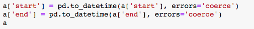We also had to ensure country names were consistent throughout all three sources used: the EM-DAT database, Google Trends, and the Google Code data. This was done manually on the csv files themselves where discrepancies were found.
Methodology
In processing our data, we first had to define what we meant by “largest” in regards to each disaster event. To keep this definition consistent, we chose to order all of our events by “people affected”: this represented the factor with the least missing values, and also seemed to be most representative when considering all the disaster types. Therefore, our first step was to each order our disasters by “Total affected”, picking out the top 5 largest events to use in comparison to media reactions. These top 5 events - alongside their date, country, latitude and longitude - were recorded and saved for later use.
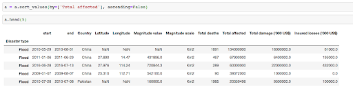In order to create a map showing total numbers of disasters per country per year (which we planned to use as a ‘general overview’ visualisation), we had to then sort through the data picking out this number, before saving this result as a csv file. Our method can be seen in the code below.
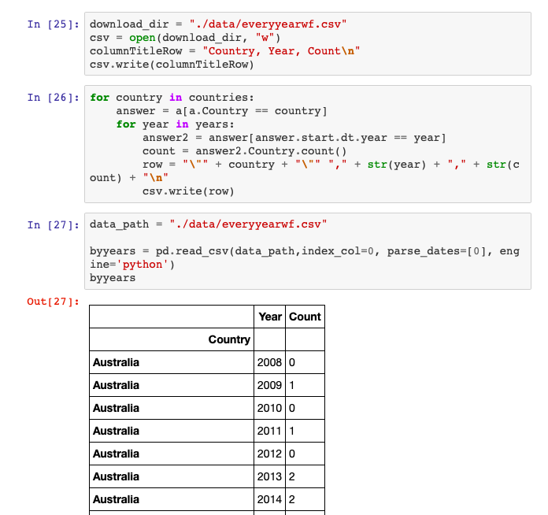To go alongside the five largest events for each disaster type, Google Trends was used to identify the five largest online reactions to each disaster type during the same time period.
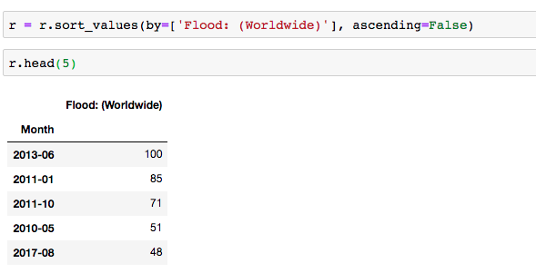These were then matched through date searching (and some manual cross-checking) to our natural disasters database, to determine the magnitude of the disaster in terms of “Total affected”.
We then, again through date searching, attempted to match the top five disaster events to their corresponding reactions in the Google Trends database. In order to do this, we often had to create new Google Trends searches for smaller time frames, to be able to more precisely identify the reaction amount. We also used the “Related topics” and “Related queries” tabs on Google Trends to identify whether reactions we found were for the correct disaster event.
Finally, we found the reaction amount per country per year, for each disaster type - to compare with the number of actual events per country per year. This dataset was easily found through Google Trends. We saved a csv for each disaster for each year, and compiled these into one containing all 10 years from 2008-2018 for each disaster type.
Methodology
In visualising the data, we used Python alongside the Bokeh library (Bokeh Development Team, 2018) and Carto software (Carto Development Team, 2018).
To create the interactive maps that visualise the top 5 events of each disaster type by both total people affected and relative reaction on Google Trends, we decided to use Carto software because it offered a relatively quick and easy method to create multiple similar visualisations from different datasets in comparison with the bokeh method. We had to extract the top 5 events data into individual csv files, containing the data on country, latitude, longitude and total affected from the EM-DAT, and reaction values from Google Trends. For each individual visualisation, the csv was uploaded onto Carto, which automatically geocodes the data creating points on a world map, which we then styled to be sized based on the ‘affected’ column and coloured based on the ‘reaction’ column.
We then added other elements including labels for each point that appear when you hover over them displaying the country and the exact figures for each variable, as well as legends for the size and colour to make the maps easy to understand.
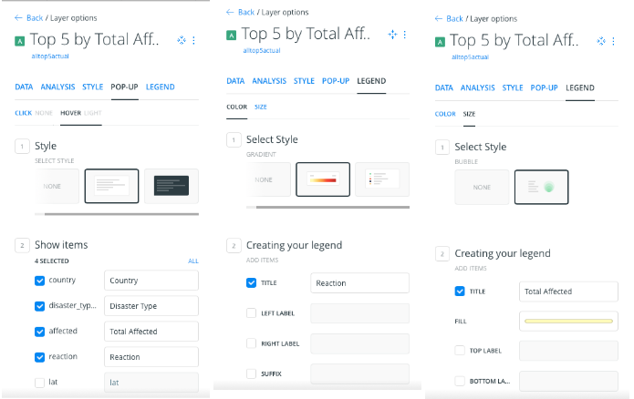For the overall maps which display the top 5 events for all of the disasters, we had to take the values for reaction from an additional Google Trends search for all the topics at once, so that they are all relative to each other. To do this we simply compared the dates of the disasters which had already been identified to the values for the given month on the Google Trends search, but one limitation here is the loss of resolution as only monthly values were available rather than weekly ones available in the previous smaller searches.
For these overall visualisations, we also added a widget which allows the data to be sorted by disaster type, so that website users can select which disasters they want to see on the map, enabling easy comparison between specific disasters.
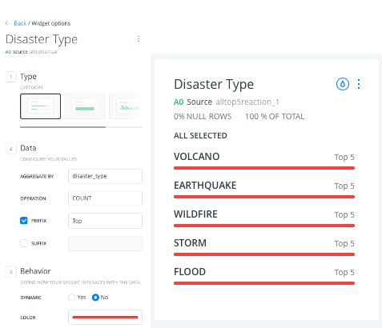To create the interactive maps that display total numbers of each disaster over time and total global reaction over time, we had data for almost every country which created databases too large for the Carto software to geocode automatically for us. Instead, we chose to use Bokeh on Jupyter Notebooks, inspired by code on the Geoviews website (Geoviews, 2016).
For both the visualisations, we created a map and layered points for each country over it. To create these maps, we used ‘tiles’ which are included in the Bokeh program: for these visualisations, we chose to use the ‘Wikipedia’ map. With our cleaned and processed databases, we were able create scatter plots of all the points, and apply them over the top of a world map, as seen in the code below. Since we didn’t assign ‘Years’ to particular task or point, Bokeh automatically added a slider allowing users to scroll across the years, changing the points accordingly. 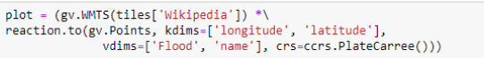We then added options in to the visualisations, using the magic %%opts function in Holoview, allowing us to make the size and colour both relative to either the number of disasters or strength of reaction respectively. To add more interactivity, we also added in a function allowing us to hover over the points to view the country name and data.
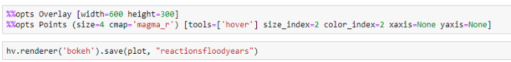To create our scatter plots, we again used Bokeh. This similarly allowed us to integrate interactivity, with tooltips that allow the user to view the country name and data. We then saved these plots as .html files, to integrate on our website.
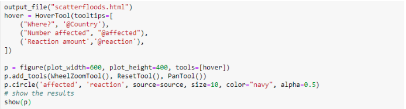We selected the colour maps for all our visualisations to be easily visible, and easy for viewers to understand the relationship with reaction, so the colours always get darker with increased reaction. For the Bokeh interactive maps, we selected ‘magma_r’ as the colour map, because it ranges from pale yellows through red to a dark black, representing increasing strength of reaction or increasing number of disasters nicely. On Carto, the colour maps available were different, so we chose a similar one that increases from pale yellow to dark red with increasing reaction.